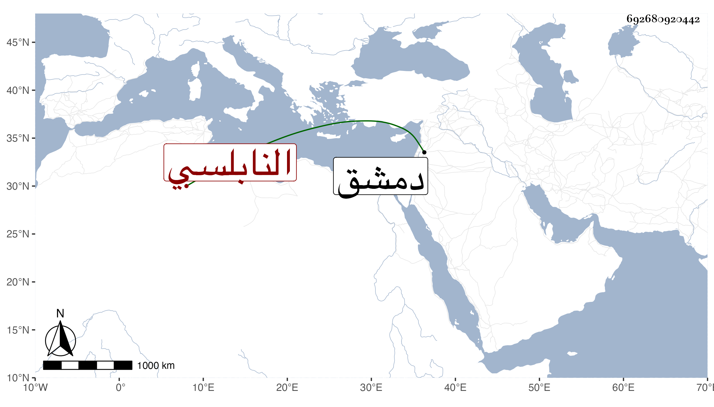

0902Sakhawi.DawLamic.ITO20230111-ara1.EIS1600.692680920442
Biography ID: 692680920442
أحمد بن إبراهيم بن أحمد بن ثابت الشهاب النابلسي الماضي أبوه . نشأ فحفظ المنهاج وجمع الجوامع وألفية ابن مالك وعرض على الزين خطاب وغيره واشتغل في العربية على أبي العزم الحلاوي ولازم خطابا والنجم بن قاضي عجلون ونشأ متصونا مع صباحة وجهه ولما استقر أبوه في الوكالة كان هو وكيل السلطان بدمشق وراج أمره في ذلك بحيث لم يكن لنائبها فمن دونه معه كلام وزاحم أباه بل ربما فاقه في جمع الأموال ونحوها إلى أن أرسل إليه قبل مسك أبيه بأيام من قبض عليه وأودعه في الحديد واستخلص منه بالضرب وغيره ما لا يضبط إلى أن مات في أثناء ربيع الآخر سنة اثنتين وثمانين بل قيل أنه طعن نفسه ولم يبلغ خمسا وعشرين سنة .
